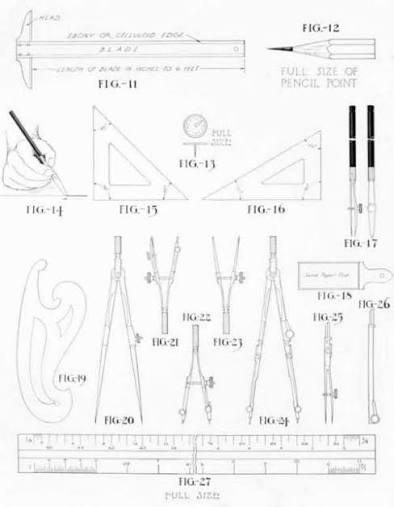

SS1 Technical Drawing: Week 2
Drawing Instruments and Materials
Learning Objectives: By the end of this lesson, students should be able to identify, state the uses, and describe the care of basic technical drawing instruments and materials.
1. Introduction to Drawing Instruments & Materials
Technical drawing requires precision. To achieve this, we use special instruments designed for accuracy and materials that support neat, professional work. These tools are the foundation of all technical drawing.

2. Essential Drawing Instruments and Their Uses
A. Measuring & Drawing Tools
- T-Square – Used to draw horizontal lines and as a guide for set squares
- Set Squares (45° and 30°/60°) – Used to draw angles and vertical lines
- Ruler/Scale Rule – For measuring and drawing straight lines
- Protractor – For measuring and drawing angles
- Compass – For drawing circles and arcs
- Divider – For transferring measurements and dividing lines equally